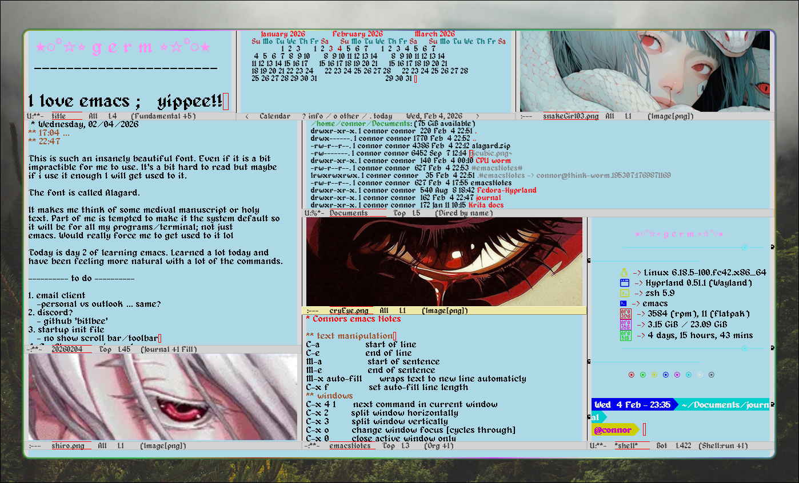

EMACS
hardcore larping
March 03, 2026

For some reason I took it upon myself to start learning how to use EMACS. It is a pretty cool program, and I can definitely see the benefits in efficiency using it. However...the time I've invested learning how to use it will probably never pay off for how little I write or code lol.
The best part of EMACS is how you can move around text using keyboard shortcuts like "CTRL a" to go to the start of the line, etc. etc.
If someone where an author or a programmer by career then it would be super valuable. But for me? ... 100% just because it looks cool lol. It's a very customizable program and you can spend countless hours tweaking it to run exactly how you want it to.
What I do use it for.
keeping a journal with org-mode is pretty awesome. And combining it with the calendar is super handy. I've started using it at work vs. my old way of pen and paper. I think having the extensive search functionality could come in really useful some day.
Whats cool about emacs is how you can run pretty much everything inside of it. It's honestly like its own whole operating system. You can run a terminal, irc chatrooms, web browsers, file explorers. You name it. Also cool is how you control everything about it using lisp programming in an init file, so you can have it boot up and behave exactly how you like it.
Something pretty cool too is you can convert discord or email or other messaging apps into irc using a program called btlbee and run them in emacs like youre in a chatroom. Or just use actual irc chatrooms. Typically thats my set up. Discord, notes, journal and calendar.